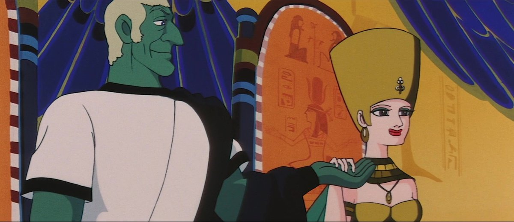

The "Animerama" trilogy of X-rated anime films from the 1970's was a very niche cult series, most notable for being developed by industry legend Osamu Tezuka, and for being X-rated erotic adventures, a trend in indie animation that was growing rapidly during that decade (see "Fritz the Cat," "Heavy Metal," etc.). The films were assumed to be long lost, but after "Belladonna of Sadness" was remastered in the mid 2010's, interest in the films seemed to return. Despite claims that the remaining two films were still lost, it wasn't long before they'd be released in Europe, and some time later in America through Discotek. I expected "Cleopatra," the middle film, to be the worst of the three. But it's bizarre enough to be worth watching at least once, even if the resulting film isn't all that "good," per say. The opening shot is in outer space: the premise is set far into the future, from the perspective of a crew of four alien astronauts, planning to invade Earth. Earth has resisted, and the invaders learn of a secret plan codenamed "The Cleopatra Project." In order to deduce the nature of the plan, they use an experimental device to transfer three of the four's souls into the bodies of people in ancient Egypt, to live alongside Cleopatra herself until her eventual death, a premise used decades later in the "Assassin's Creed" game franchise. ... that's not what you expected from the film's title, is it?After a seizure-inducing sequence, we're in Egypt, and the three souls have landed in the bodies of one of Julius Caesar's slaves, an Egyptian peasant and resistance member, and Cleopatra's personal pet leopard (who's perpetually horny and unable to do anything about it). They don't remember anything of their "future" lives, and the resulting conclusion is of little consequence to the sci-fi setting. But we do see Caesar's impending invasion of Egypt, and the people's plans to resist, centering around Cleopatra, who willingly molds herself into an object of beauty and intense sexual desire. She will make Caesar fall for her, lower his guard, and kill him when the time is right. Spanning across many years, she will also have to use her charms on other Roman emperors with great ambitions and weak defenses on the opposite sex, and struggles to separate her feelings of love with that of her country.Keep in mind this film released well before modern anime design sensibilities existed. The art and animation has much more in common with old Rankin and Bass Christmas specials (also animated by Mushi Productions, like this film) than it does with "Naruto" or "Attack on Titan." This is only a problem with Cleopatra's final design of beauty: her large chin and swollen red lips are hideous, but perhaps this was considered beautiful at the time. Otherwise, the animation is cheap and limited, although it's quality suggests this had the largest budget of the three movies. "Cleopatra" might be sold as an erotic fantasy, and there might be nudity and implied sex throughout. But it's not particularly exciting compared to modern standards. If you're looking for an artful film, this delivers, but this certainly isn't porn. There is also violence and implied rape from pillagers, but is played as a joke in this cartoon. And contunuity is virtually non-existant, so best not to take the movie too seriously, even if some of the results are inpsired by real history.  The most interesting thing is how experimental the film gets. The initial outer-space sequence, for example, uses live action shots of set pieces, and is acted with real people and 2D faces overlaid on top of the heads. The sex scenes are always abstract to allow them to get away with things for an audience not yet used to seeing sex on the screen, either appreciable from an art perspective (one scene uses only horizontal, curving lines to simulate the motion) or plain humor (one scene pretends to have an issue with the screen projector, displaying conveniently sensored top and bottom halves of the frame). Psychadelic colors and abstract sequences would make this an interesting watch when paired with recreational substances.There are several references to modern day (circa 1970) elements, and all manner of historical references from the centuries in between, including paintings and statues from around the world, from France to the USA. Caesar's famous assassination is played out as a Japanese Kabuki play. And there's a TON of quick pop-culture references, from voice actor gags, to cameos from Japanese manga and anime (even Tezuka's own Astro Boy appears in this adult film). It's worth watching again with the audio commentary, provided on the BluRay by anime historican Helen McCarthy, to give some extra context for some of the more obscure references.As an art film, it's a fascinating work. As a story however, modern audiences will likely grow bored, and the movie feels about an hour longer than it should have been. Characters aren't particularly interesting, save for the exception of Julius Caesar himself. The ambition in the scope of the movie isn't unlike the classic Hollywood films of the era, set in exotic places the Rome, Egpyt, Africa or Russia. But those movies, also dull, at least had the marvel of grand set pieces in real life, and massive Hollywood stars to recognize and admire. "Cleopatra" doesn't, and the film is only moderately watchable thanks to the frequent visual jokes that break up the pacing. For home video, the Bluray picture looks sharp enough, but not especially grand. There is some telecine wobble during a few scenes that is distracting, and it's unfortunate that couldn't be fixed before the master was burned onto disc. There's no English dub, and while the Japanese acting is good, it's a little bizarre to see it in a setting where no one is Japanese (English would have just as problematic, but at least familiar).None of the movies in the "Animerama" trilogy are all that good, but are interesting to watch for historical purposes. "Cleopatra" is probably the most flawed film of the three, but also the most bizarre, and that works in its favor. To think that Tezuka worked on this is fascinating, a sign that he didn't take himself too seriously, but also proof that he was an advant-garde artist pushing the medium.
- "Ani" More reviews can be found at : https://2danicritic.github.io/ Previous review: review_City_Hunter_-_Shinjuku_Private_Eyes Next review: review_Code_Geass_-_Akito_the_Exiled